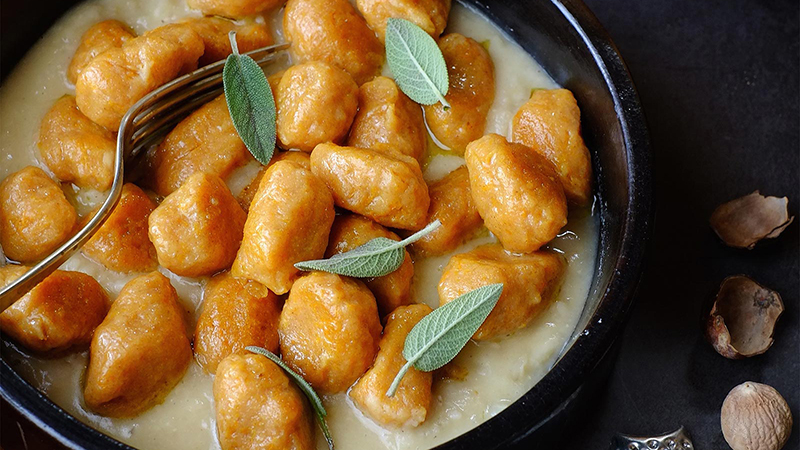

Gnocchi with Pumpkin Cream
Baked gnocchi with pumpkin cream and nutmegs.
Savor the cozy warmth of Gnocchi with Pumpkin Cream , a delightful fusion of soft potato dumplings and the velvety
richness of pumpkin.
This dish is a celebration of comfort, where the earthy sweetness of pumpkin mingles with the
savory charm of gnocchi, delivering a culinary experience that embodies the essence of autumn.